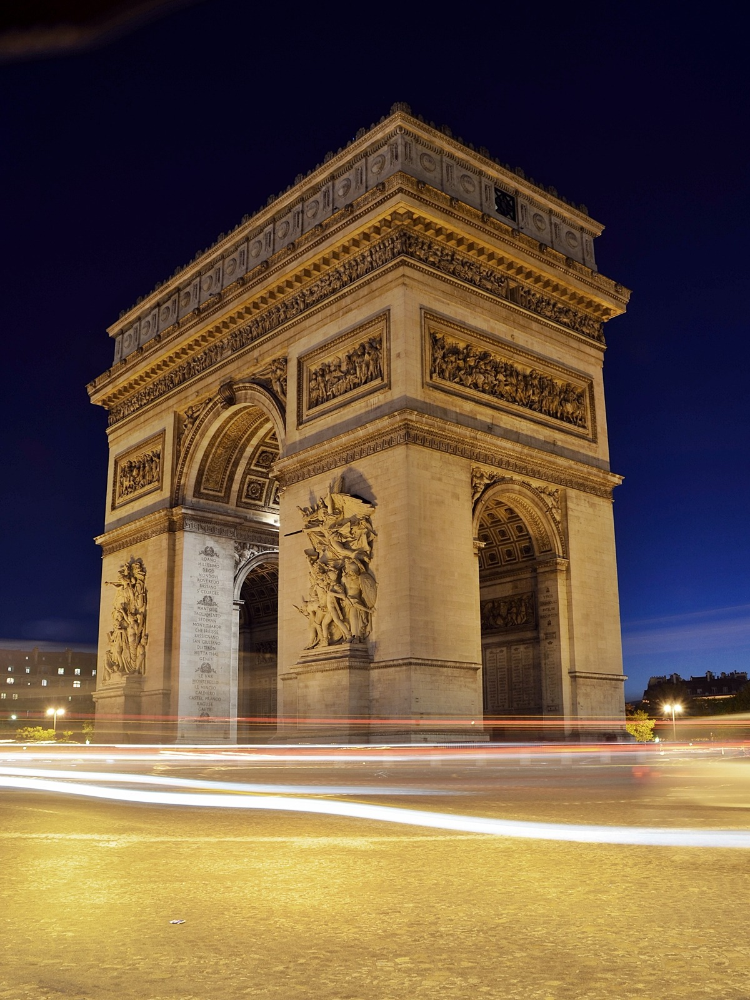

Two reasons. First, it was among the first European cities to use gas street lamps back in the 1860s, making it literally a City of Light (see pic below). But also because earlier, in the 18th century, Paris was a essentially a hub during the Age of Enlightenment. So literally light, with enlightened minds. Voila.
During the time of the ancient Greeks, there was much tension between the Trojans and the Greeks, leading to the famous Trojan War. It all started when Paris, the prince of the magnificent city of Troy, abducted a woman after making a deal with the goddess of love, Aphrodite. There are many variations on how the war began and the battles that took place during it, but one event stayed for certain: The story of the large, wooden horse that lead to the downfall of Troy. Most of the information about this historical event was recorded in Homer’s famous works, The Iliad and The Odyssey. The Trojan War was started by a petty feud between three goddesses, fought by brave warriors, and recorded in Homer’s Iliad and Odyssey. Conflicts began between the Trojans and the Greeks began long ago when King Peleus, who later on became the father of the Trojan War hero, Achilles, married Thetis, a sea nymph.

For the past two centuries, Paris, France has been known as one of the most beautiful countries in the world. There have been countless amounts of literature and poetry written on the subject, and the world has universally acknowledged the allure and elegance of the city. The architecture of the city is world renowned and the greenery is breathtaking. There are large parks full of families and young couples, and with all the incredible museums and art galleries, Paris is not a city devoid of culture, from which the very successful tourism business flourishes. It is often referred to as a “City of Light”, which is an indicator of the popular nightlife. However, Paris is probably most well-known for its fashion and cuisine industries. Top brands from all over the world have their headquarters in the city, and many famous designers come from there. Many styles and trends find their origin in Paris. The food is also a huge industry in Paris, with the city crawling with the finest chefs. The general atmosphere is so dreamy and elegant, with the various landmarks and the gorgeous sights.
When most people think of Paris, France, they think of “city” of love,” the Eiffel Tower, and all this beautiful city has to offer. With all the shopping and luxurious clothes to jewels. Many musicians, artists, and even actors come from Paris. There are museums and other places to enjoy music and to appreciate the arts. Paris, also known as The City of Light, is the perfect place to visit. Everything there is to do in Paris is a lot, there are a lot of things to see also. Like the enormous amount of buildings and structures you can visit. Paris also has a Disneyland, who knew, not me? Paris would be a great experience for anyone to go, it's a beautiful city and there just a lot of things to do in the city alone. Paris, France wasn't always a city, it had to start somewhere. The huge city today was founded in the BC’s in 52 BC to be exact, it was settled by a small Gaul tribe.

When most people think of Paris, France, they think of “city” of love,” the Eiffel Tower, and all this beautiful city has to offer. With all the shopping and luxurious clothes to jewels. Many musicians, artists, and even actors come from Paris. There are museums and other places to enjoy music and to appreciate the arts. Paris, also known as The City of Light, is the perfect place to visit. Everything there is to do in Paris is a lot, there are a lot of things to see also. Like the enormous amount of buildings and structures you can visit. Paris also has a Disneyland, who knew, not me? Paris would be a great experience for anyone to go, it's a beautiful city and there just a lot of things to do in the city alone. Paris, France wasn't always a city, it had to start somewhere. The huge city today was founded in the BC’s in 52 BC to be exact, it was settled by a small Gaul tribe. These people were also called Parisii. A small city known as Lutetia became a fishing village along the Seine River called the Île de la Cité. Paris history goes back 2,000 years.
To read more. Click here